Hoy cierro una etapa que disfrute mucho, sonreí, conocí y celebre muchas cosas de las cuales estoy orgullosa. Hace dos año inició este lindo camino y lo estoy culminando de la mejor manera. Este colegio no solo me enseño las materias básicas y complementarias, aprendí que las metas se pueden cumplir, los retos cuestan sin embargo, con perseverancia todo sale bien y esta página es mi forma de decir gracias por todo lo vivido.
Cada uno de estos momentos marcó mi paso por el colegio. Algunos me hicieron reír, otros me hicieron llorar, pero todos me hicieron crecer.
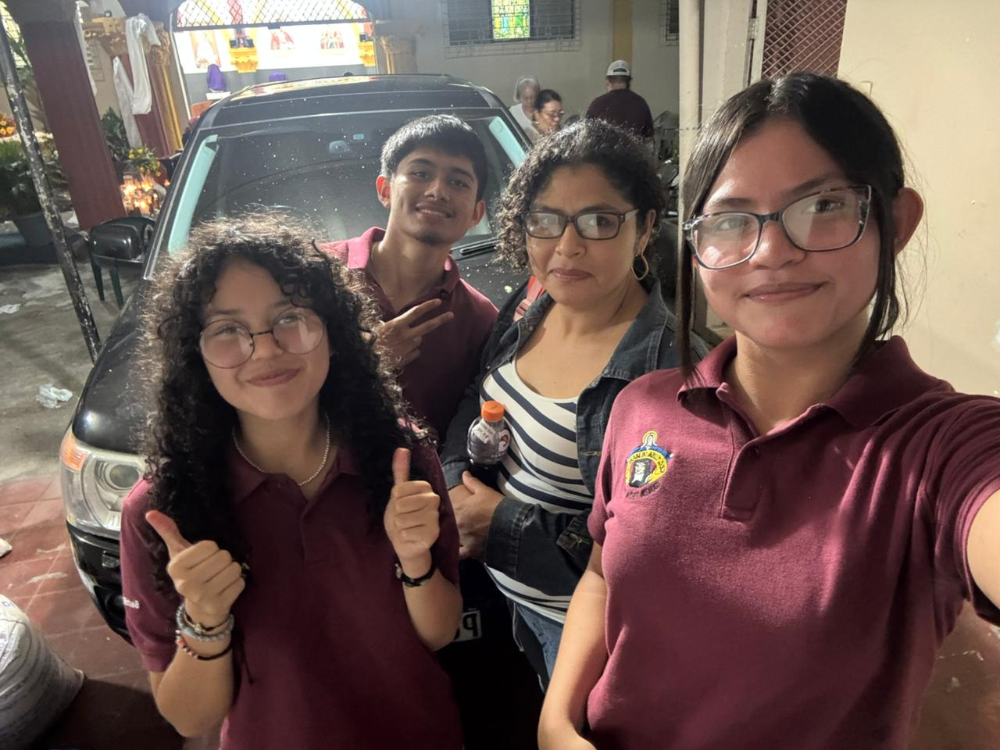
Creo que fue uno de los momentos más bonitos que he vivido en mi etapa de segundo año, recuerdo que tuve un horario de 5pm a 5am porque teníamos que hacer una alfombra para una estación, estuvimos toda la noche en las calles y pintando sal, cortando letras, para el día siguiente no dormir nada y hacer el recorrido por las estaciones siendo parte de la representación del pueblo.
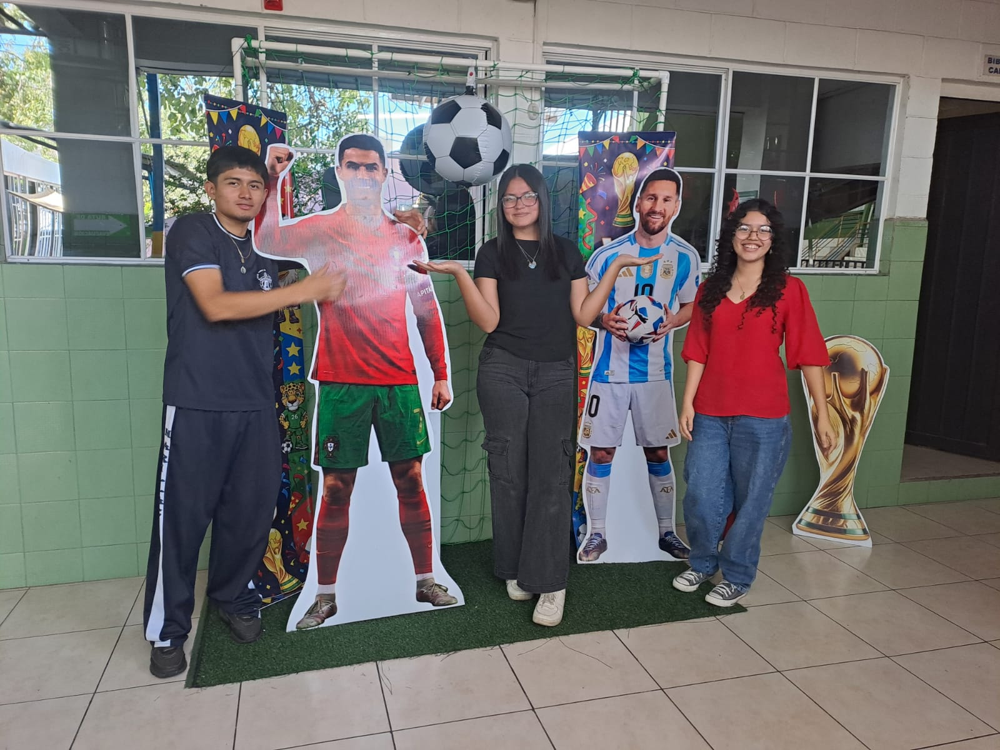
Fue un día super divertido, nos tomamos fotos con jugadores, nos vestimos de drágones y tuve que hacer unas alas super pesadas que se veían geniales, fui un drágon rojo, por otro lado, fue uno de mis recuerdos más memorables de este año y como tal de mi recorrido por la institución.
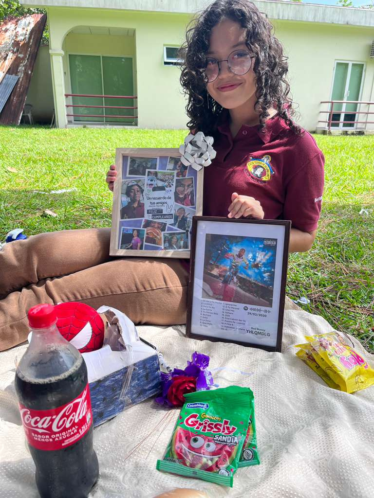
Mi cumpleaños número 17, fue un día memorable y que es parte de mi aventura, ya que hicimos un picnic en el receso de horas sociales, en el asilo, todos los recreos nos sentabamos con mis amigos debajo de un árbol frondoso que daba sombra, fue ese día 16 de agosto de 2025 que celebre con personas importantes y realizamos un pequeño picnic, comida, regalos, una búsqueda del tesoro, etc.
Primero que nada, muchas gracias, le tengo un aprecio muy grande, desde inicios del año pasado cuando empecé a responder el resultado de cada raíz cuadrada y me preguntara mi nombre, ha sido un persona clave en mi proceso, que inspira e impulsa, que aconseja a no tener miedo de hablar y que las metas si se cumplen. Mis recuerdos favoritos son cuando nos contó anécdotas sobre su niñez, o el aconsejarnos en vacaciones a entrar hasta la mitad del cuerpo al mar, al igual que las noticias de facebook y como no olvidar los refuerzos por las tardes y las gomitas ácidas, es una persona excelente, dedicada que ama su trabajo y estricta cuando se debe. "de tener pena no se vive". Una frase que me dio valor, en mi incertudumbre por repetir mi foto de graduada, un miedo irracional porque al final todo salió bien.
Gracias por su paciencia cuando no entendía problemas, por los todos esos pulgares arriba luego de las presentaciones, por impulsar a cada uno de nosotros a ser mejores y aprovechar las oportunidades que se presentan y seguir intentando a pesar de que es díficil. Nos enseño a pensar, creer y resolver.
Cada año trajo consigo experiencias únicas. Aquí un resumen de lo que viví.
| Año / Grado | Momento Especial | ¿Qué Aprendí? | ¿Cómo Me Sentí? |
|---|---|---|---|
| Primer Año | Mi primer día de clases | Que puedo hacer amigos nuevos, pude iniciar una nueva etapa que tuvo muchas experiencias geniales que las recordare por siempre, me enseño a crecer de manera personal y espiritual. | Muy asustada luego de tanto tiempo iba a convivir con personas nuevas y no conocía a nadie. |
| Primer año | Horas sociales | A cuidar de otros, a ver la realidad de muchas personas ancianitas y compartir con mis amigos en diferentes eventos que se realizaron en el asilo, como mañanas acuáticas, despedidas, etc. | Orgullosa del resultado, de la experiencia y de los momentos vividos, un poco nostalgica ya que este año solo fuimos poco tiempo sin embargo, lo agradezco. |
| Segundo año | Proceso Formativo | Pues, principalmente la perseverancia y constancia, fue un proceso largo de casi 5, 6 meses, de sacrificar fines de semana, viernes por la tarde, noches de tareas y mucho estrés acumulado, por otro lado, hubieron muchas actividades que recompensaron ese sacrificio, y que no mayor recompensa que la beca obtenida para estudiar en la Universidad que yo decida. | Al principio, muy frustada y saturada por tanta carga acádemica, ahora es un alivio poder decir con total orgullo que tengo una beca y soy parte del proceso de becados DI+ en El Salvador. |
| Segundo año | Todos nuestros eventos de seniors | No puedo describir lo mucho que he aprendido de todas las personas que fueron parte de mi bachillerato, como a pesar de nuestras diferencias fuimos capaces de sacafr adelante muchos eventos que se veían imposibles, como la flor a la virgen de la medalla milagrosa, el Vía Crucis viviente, Ví Lucis, Celebración del día del maestro, Lunes cívico, Día del estudiante, día del niño, nuestro acto de Costa Rica entre otros. Que ahora son parte de mi bonita experiencia. | Nostálgica y agradecida con cada uno de mis compañeros. |
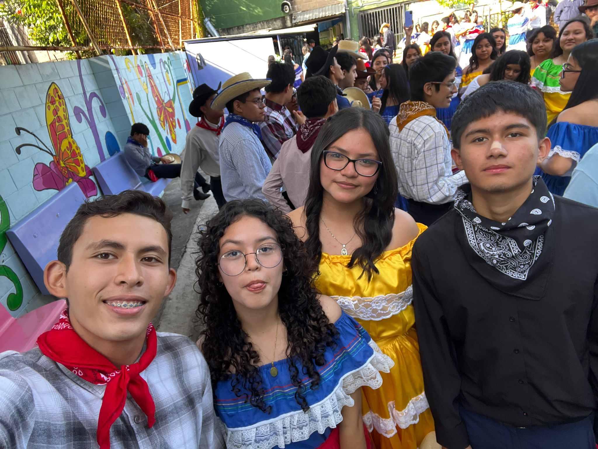
Si tuviera que guardar un solo recuerdo de todo mi tiempo en el colegio, sería mi grupito de 4, ha sido una de mis mejores experiencias con amistedes, ha sido algo lleno de aventuras, locuras, risas y sobre todo cariño, les agradezco a esas tres personas, mi mejor amiga Yariela, Noel y Diego por ser parte de mi proceso actualmente solo quedamos Noel, Yariela y yo en la institución sin embargo, aún tenemos contacto con Diego, tardaría horas y horas en contar toda nuestra historia como grupo, fuimos, seremos y somos, para mi el mejor grupito de la historia. Los quiero muchisímo.
Porque no se trata de "un recuerdo" sino, de todas mis experiencias vividas con estás personas que fueron parte de mi proceso en bachillerato, nunca voy a olvidar todas las risas, los desacuerdos, el estrés por tantas tareas y sobre todo el cariño tan gigante que les tengo, ahora cada uno tomará su propio camino y le pido a Dios que me los cuide siempre mis personitas especiales.
Hay personas que se vuelven una luz constante a lo largo del camino, y tú has sido una de ellas. Gracias por cada experiencia que vivimos y que vamos a vivir, por cada nuevo lugar que conocí por ti, por enseñarme tu "casa" y porque aprendí a ver la vida de otra manera, porque estamos creciendo y aún falta mucho recorrido, por estar para mi y ser una de las personas de las que más confío.
Tu presencia hizo que esta etapa no solo fuera de aprendizaje académico, sino también de crecimiento personal y momentos inolvidables. Gracias por estar siempre ahí, por ser una gran compañía y por dejar una huella imborrable.
Una colección de momentos imborrables, sonrisas y momentos especiales capturados en fotografías.
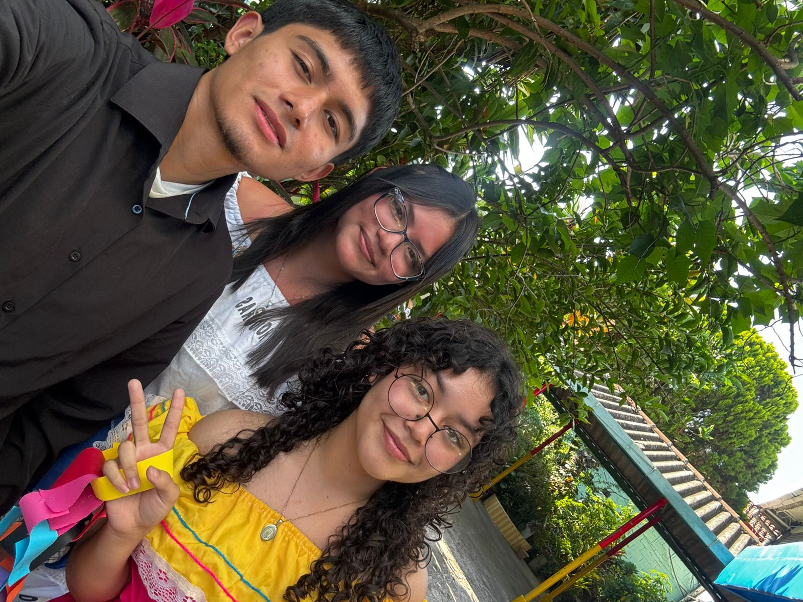
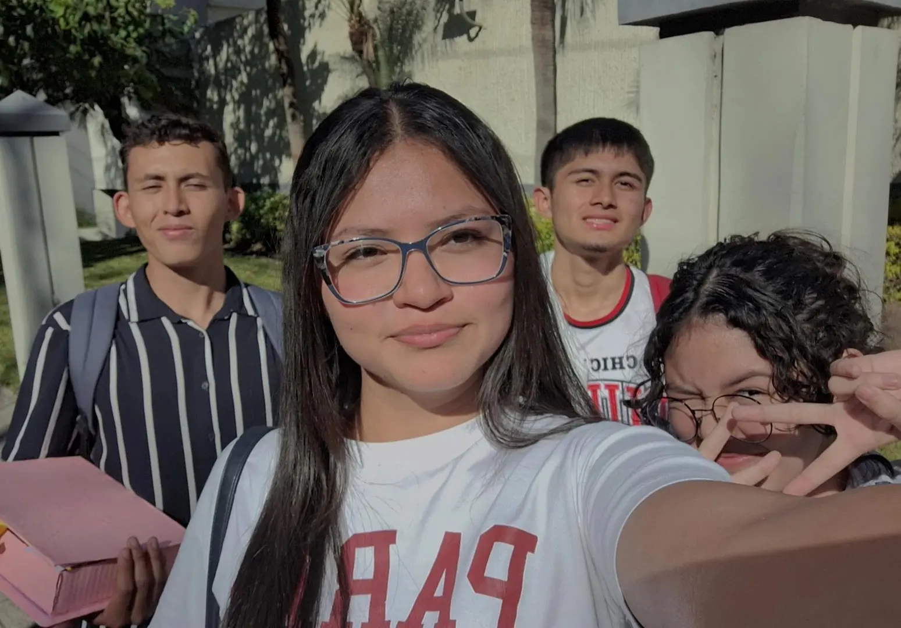
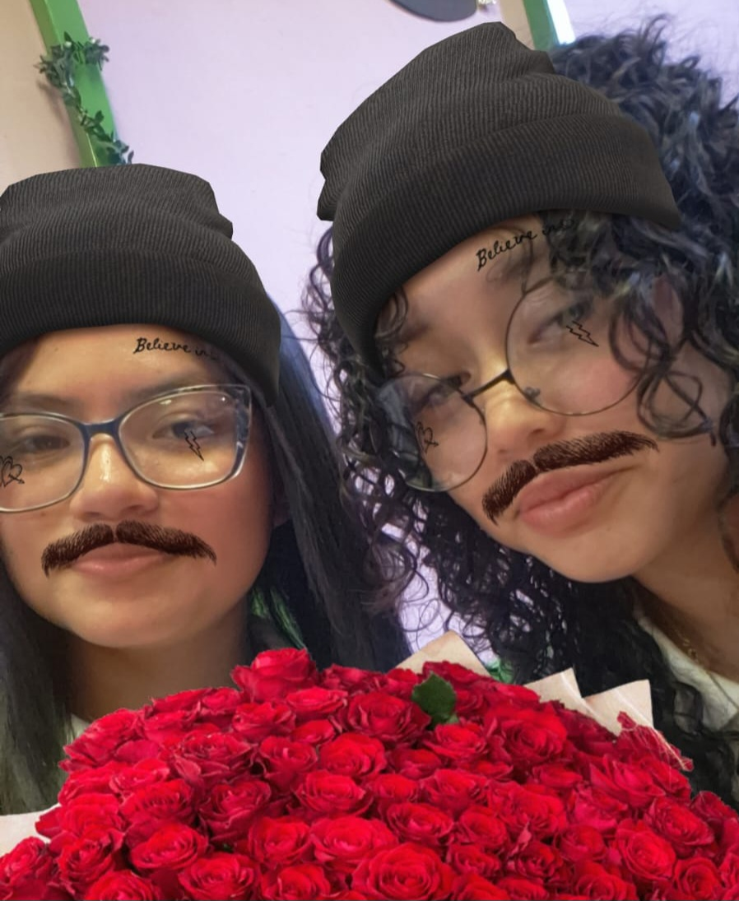
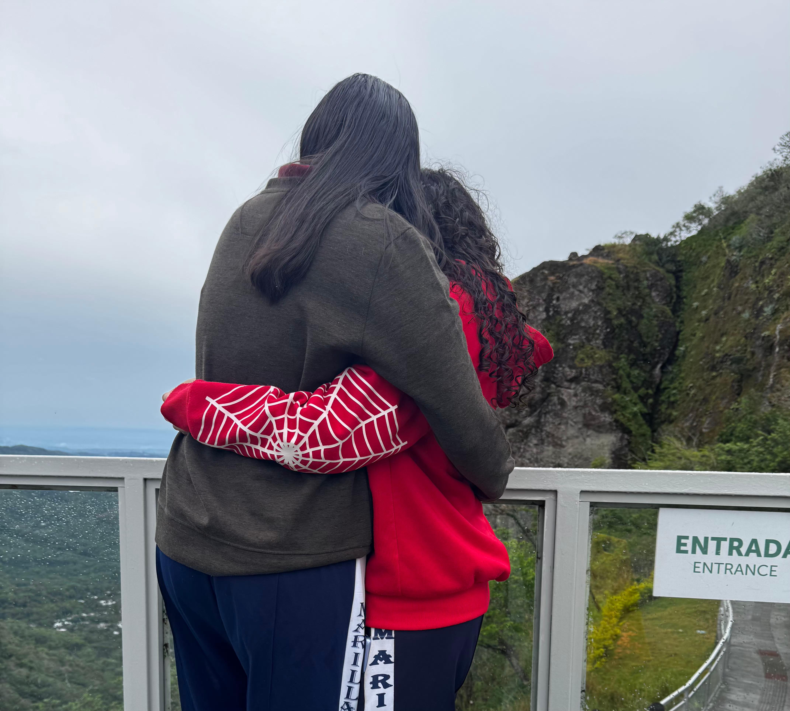
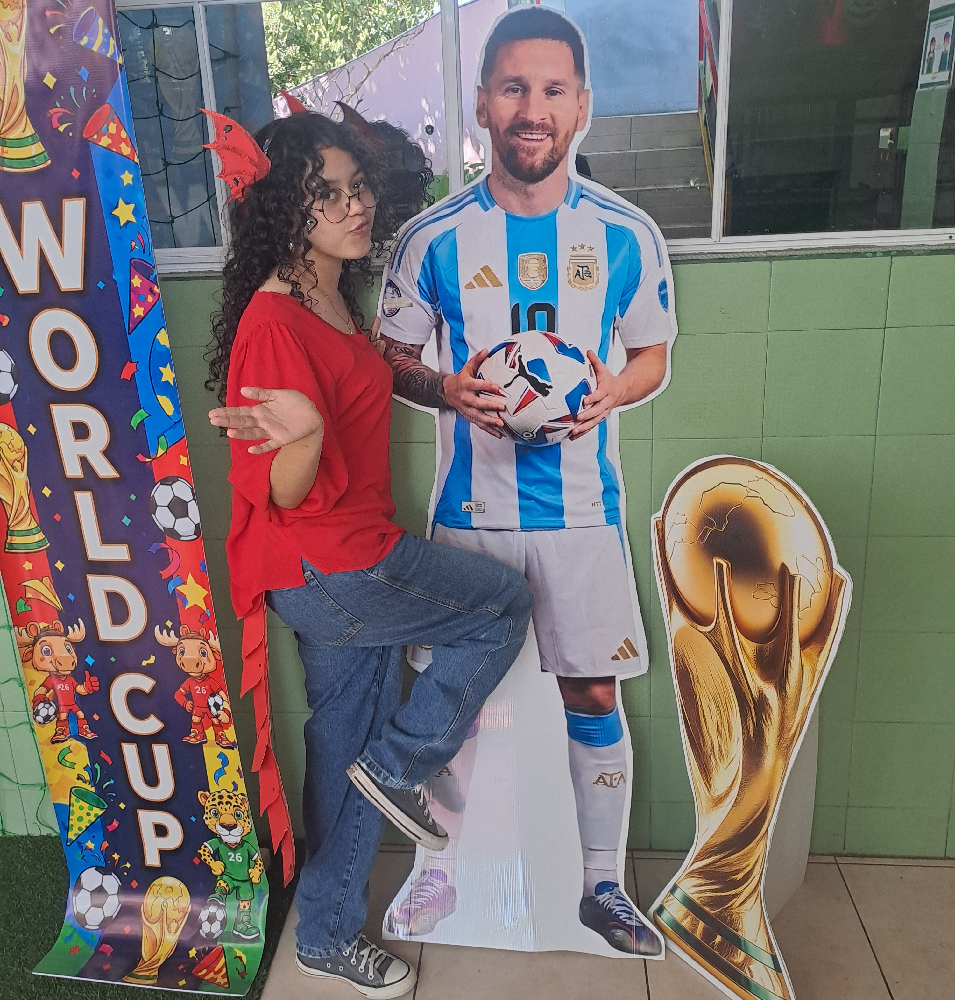
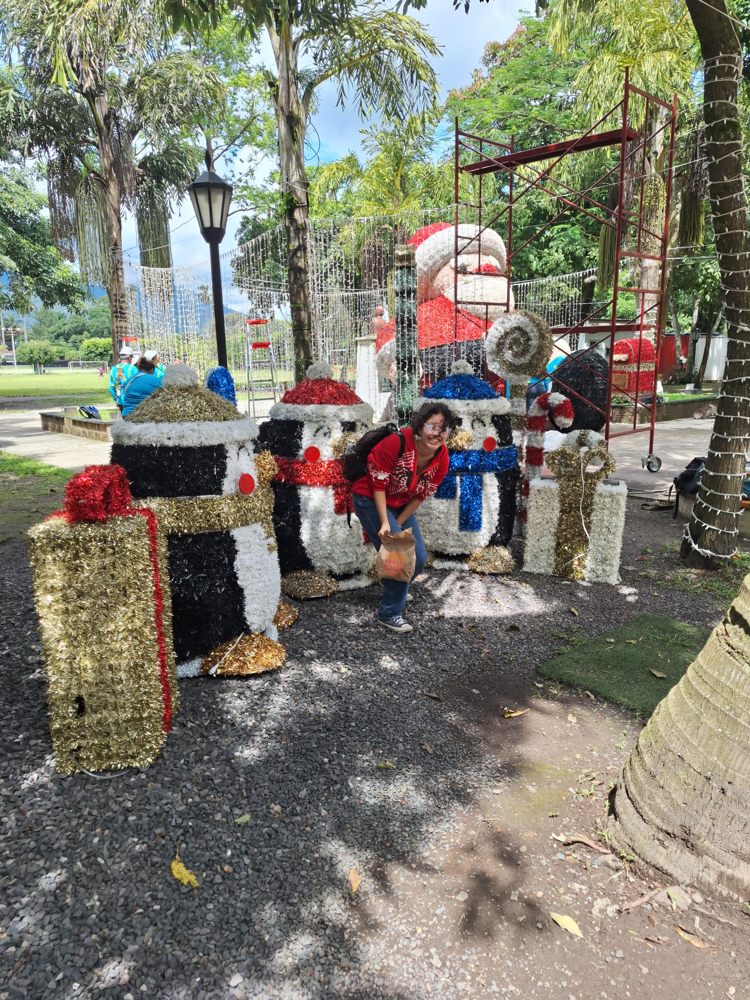
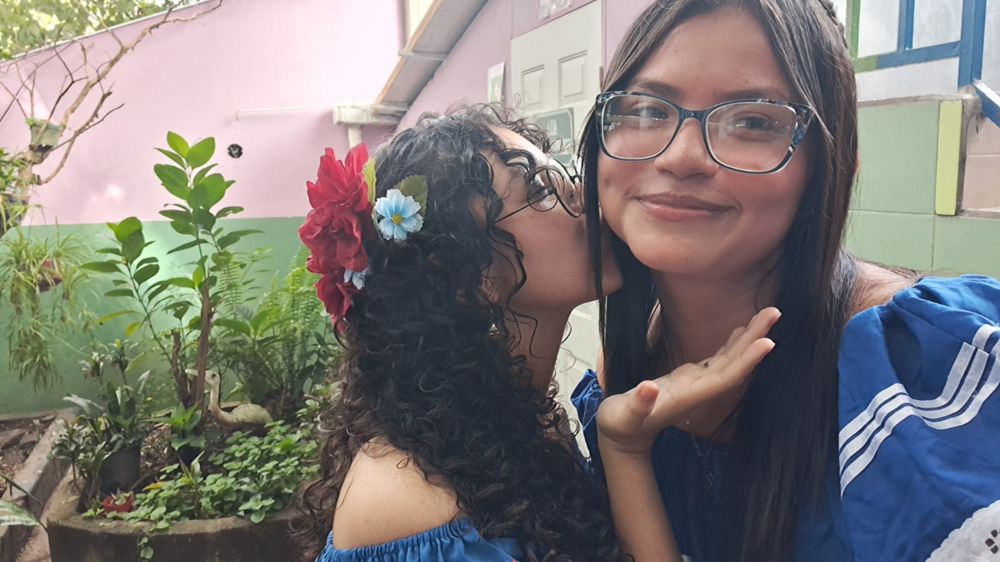
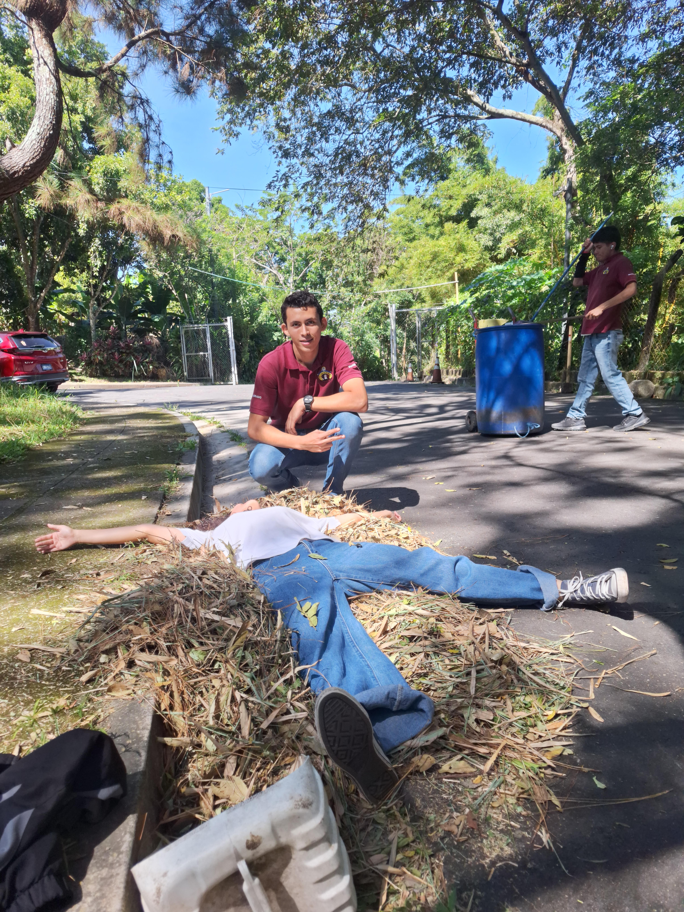
Instantes en movimiento, risas y pequeños clips que guardan la esencia de esta gran etapa.